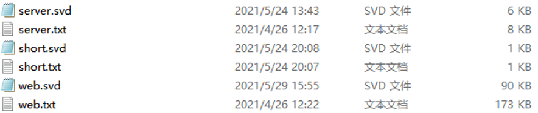

哈夫曼编码译码器
简介
在之前的数据结构课题设计作业里，我和组员一起完成了一个哈夫曼编码译码器。
程序采用 python 为基础，分为编码端和译码端两个程序，以下为程序的 markdown 文件内容：
# All rights Reserved, Designed By www.xysama.cn
# @projectName huffman en-decoding
# @author ky0ha
# @date 2021.05.29
# @version V1.0.0
# @copyright ky0ha.github.io
# 注意 本内容仅限于学习交流使用，禁止用作商业用途
哈夫曼编码程序文件
./decode 和 ./encode 为本体程序的编码端和解码端的快捷方式，其中 decode 为编码端，encode 为解码端
程序使用 python 语言实现，gui 的实现使用 python 的 tkinter 库
程序使用的库有：tkinter，json，os，time，random，pickle
由于exe未经过真正意义的打包，故必须在拥有上述库以及 python 3.x 运行环境下使用
压缩后的 *.svd 文件为自定义文件格式 save data file，本质为 *.json 文件，
文件的格式为
{
"binary_data": "11111110110111010101100000011",
"code_len": "29",
"decode": {
"E": "00",
"C": "01",
"D": "100",
"B": "101",
"A": "11"
}
}
其中 "binary_data" 和 "decode" 内的 01 数据由 python 更改为二进制数据，并直接存储于 *.json 文件内，
当解码的时候再根据二进制数据翻译为字符串，进行解码
注意：程序并未使用 python 的 pyinstaller 进行打包，所以文件内的各个部分理论上可以随意移动且不受影响，但是最好不要随意改动，
因为程序代码并没有进行十分完善的 debug 环节和 bug 捕获。
如果程序出现不知名的 bug 导致无法正常运行，请尝试重新解压。如果问题依旧存在，请联系制作者。
程序思路
编码端思路
1、对于小文本，采取直接从输入框获取输入文本内容的方式获取内容，用户可以直接从输入弹窗手动输入文本内容用以编码。而对于大文本来说，从输入框手动输入虽然可行，然是很明显过于麻烦，不可取。于是我们采用了从文件读取的方式，默认文件格式为 txt 文本文件（注意：文本格式必须为 utf-8 编码）
2、将获取的输入文本存储为字符串变量，由于哈夫曼编码的特性，先对字符串做一个词频统计，python 词频统计代码如下：
weight_dict = {}
for value in string:
weight_dict[value] = weight_dict.setdefault(value, 0) + 1
其中 string 是存储了待编码字符串的变量名，采用 python 字典的 setdefault() 方法进行简单的词频统计（实际上是逐字统计，并不是按词汇）。
3、根据词频统计结果设置结点的权重和内容，构建哈夫曼树。
首先声明一个列表，用来存放所有的制作好的结点。然后将列表一直维持在有序状态，通过结点的权重进行排序。每次从列表中取最前面的两个，他们的权重是最小的，利用递推的方法，将所有的结点全部进行连接，最后列表中会只剩下一个节点，将节点命名为 root，作为根节点取出，这样就构建好了整个哈夫曼树。
结点列表制作代码：(其中 weight_dict 为词频统计的结果字典，node 为声明的结果对象)
node_list = []
len_list = len(node_list)
for key, value in weight_dict.items():
node_list.append(node(key, value))
len_list+=1
node_list.sort(key=lambda x:(x.weight, -len(x.value), x.value))
# 使用元组作为 sort 的参数 key 可以做到根据多个值排序，key 的值内容为负表示根据该内容的反序排序
哈夫曼树构建代码：（其中 print_tree 为前序遍历输出树的函数）
while len_list>1:
root = node()
root.add_lchild(node_list.pop(0))
root.add_rchild(node_list.pop(0))
root.weight = root.lchild.weight + root.rchild.weight
for index, value in enumerate(node_list):
if root.weight < value.weight:
node_list.insert(index, root)
print_tree(root)
else:
node_list.append(root)
print_tree(root)
len_list-=1
4、根据哈夫曼树编码字符串
将字符串逐字遍历，在字典中寻找对应的值，直接用值替换原本的字（键），从而将字符串编译为一个 01 字符串。
5、实现部分内容的显示和编码内容的保存功能
既然有编码，就存在解码，编码端和解码端的唯一交互方式就是通过编码后的文件，所以文件存储在编码端中显得尤为重要。
通过将编码串和编码长度以及根据哈夫曼树构成的编码表存入一个字典，将字典直接通过 plcket 库打包为二进制文件。但实际上如果直接这样打包，可以看到 01 串中的一个 0 或者 1 本质上还是字符，占用 1 个字节，并没有实现真正的压缩效果。
对于上述问题，我在用 plcket 打包之前，将编码字符串直接变转换为对应的二进制数，对于编码表的 01 串也采用相同的方式转换，这样在打包为二进制文件的时候才能使一个 1 或者 0 以 1 比特的形式存储。
但是实际上还有一个问题的出现，因为二进制码存在 0 开头的编码串，但是在译码端将二进制的编码串翻译回字符串的时候会导致 0 开头的部分，开头的 0 被忽略掉，所以我使用的方式是牺牲一个比特，放在编码串最前面，并置为 1，这样无论怎么变换，都不会导致前面的 0 被忽略。
实际的测试结果，对于大文件的压缩率在50%左右，而对于小文件由于存储格式的限制，4kb 以下的文件普遍呈现出负压缩的现象。这是由于算法本身的问题，没有解决的方法，而且由于哈夫曼编码的局限性，对于文本复杂度低的文本压缩率很高（比如英文），而对于文本复杂度较高的文本来说（比如中文，中文的常用字差不多2000个），压缩率很低，这个问题也无法解决。
解码端思路
1、选择编码文件并进行格式化
从窗口选择编码文件（编码文件在编码端保存的时候定义为 *.svd 文件），将编码文件从二进制翻译为 python 的字典对象，然后将编码表用 zip() 方法进行翻转，转化为译码表。
svd 文件读取后的格式化过程：
save_file = {
'binary_data': to_str(temp['binary_data']),
'code_len':int (temp['code_len']),
'decode': dict(zip(temp['decode'].keys(), list(map(to_str, temp['decode'].values())))),
}
2、将格式化后的编码串根据译码表译码
创建两个队列指针 left 和 right，left 固定在第一个，right 向后递推，当 [left， right) 的左闭右开区间内的编码在译码表中有对应的值，则用值替换区间内的编码串，left 移动到 right 位置，right 继续向后递推。从而实现用滑动窗口的方法遍历整个编码串，从而进行译码。
滑动窗口实现过程：
left, right, = 0, 1
while right<= code_len:
if binary_data[left:right] in decode:
result+=decode[binary_data[left:right]]
left = right
right = left+1
else:
right += 1
3、通过 randint 实现随机更新进度
当我使用 tkinter 制作进度条显示的时候，因为 python 有全局锁，导致一个 python 程序只能使用一个 cpu，导致 python 的效率受限。其次是因为刚开始我的进度条是每遍历一个编码串字符，就要刷新一次进度条，导致因为刷新频率太快而程序效率极其低下。
为了解决这个问题，我将进度条设置为 10 格，每 10% 更新一次，一次更新一格，然后再进度显示的文本处通过 random 库的 randint 实现了随机频率的文本更新。原理是在每一次更新文本的时候，都调用一次 randint(7,100)，生成一个 7 到 100 之间的随机数，由于单位问题，这里实际上是 0.07% 到 1% 的更新间隔，从而使下一次更新间隔完全随机，实现更新间隔的随机更新效果。
if speed%flag==0:
s.set("解码进度：{:.2f}%".format(speed/100))
flag = random.randint(7,100)
init_window_name.update()
4、最后将解码完的字符串进行输出